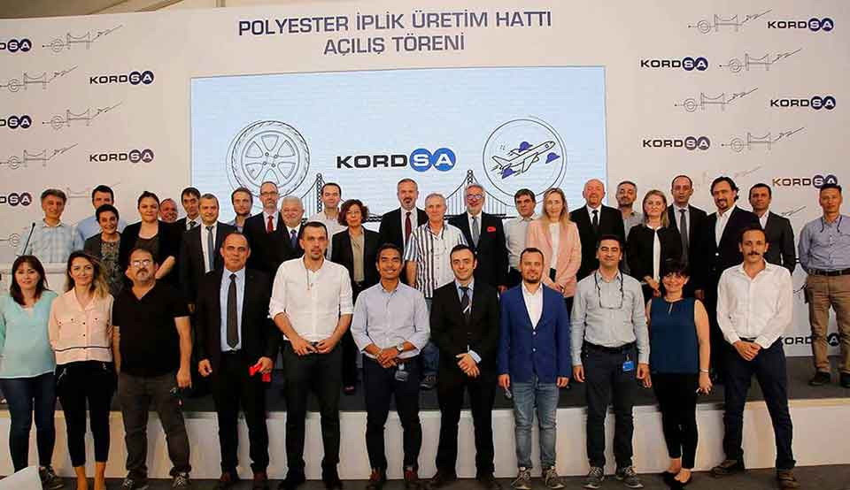
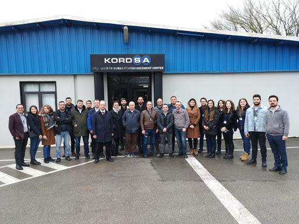

1973 Kordsa İzmit Lastik Kord Bezi Fabrikası
1976 İlk İhracat
1982 Lastik Kord Bezinde “Kordsa 2” Hat Yatırımı ile Büyüme
1984 Lastik Kord Bezinde “Kordsa 3” Hat Yatırımı ile Büyüme
1987 Dusa, Sabancı – DuPont Naylon İplik Fabrikası
1990 “Kalite Kültürü” Çalışmalarının Başlaması ve Toplam Kalite Yönetimi’nin Uyarlanması
1993 Dünyanın ISO 9001 Sertifikasını Alan İlk Tekstil Firması
1996 TÜSİAD-KalDer Kalite Ödülü
1998 Güney Amerika Yatırımı
1999 Dusa İplik fabrikası ile Kordsa Bez Fabrikasının Birleşimi
2000 Kuzey Amerika Yatırımı
2005 Sakosa ile Birleşme
2006 Asya’da Büyüme; Endonezya, Tayland, Çin
2008 Global Teknoloji Merkezi’nin Açılışı
2010 TURQUALITY küresel marka programı üyeliği
2014 Endonezya kapasite artışı
2015 Kratos’un ticari ürün haline getirilmesi
2015 İnovasyon Stratejisi Şampiyonu
2015 En İyi Ar-Ge Merkezi Ödülü
2016 Kompozit Teknolojileri Mükemmeliyet Merkezi
2017 İkinci Ar-Ge merkezi
2017 Endonezya’da En Hızlı Büyüyen İlk 100 Şirket Arasında
2018 Brezilya’da 3 yıl üst üste Great Place to Work ödülü
2018 Kompozit Teknolojileri Mükemmeliyet Merkezi’ndeki üretim tesisinin AS9100 Sertifikası
2018 Fabric Development Inc. ve Textile Products Inc. şirketlerinin satın alınması
2018 Advanced Honeycomb Technologies şirketinin satın alınması
2019 Axiom Materials şirketinin alınması

